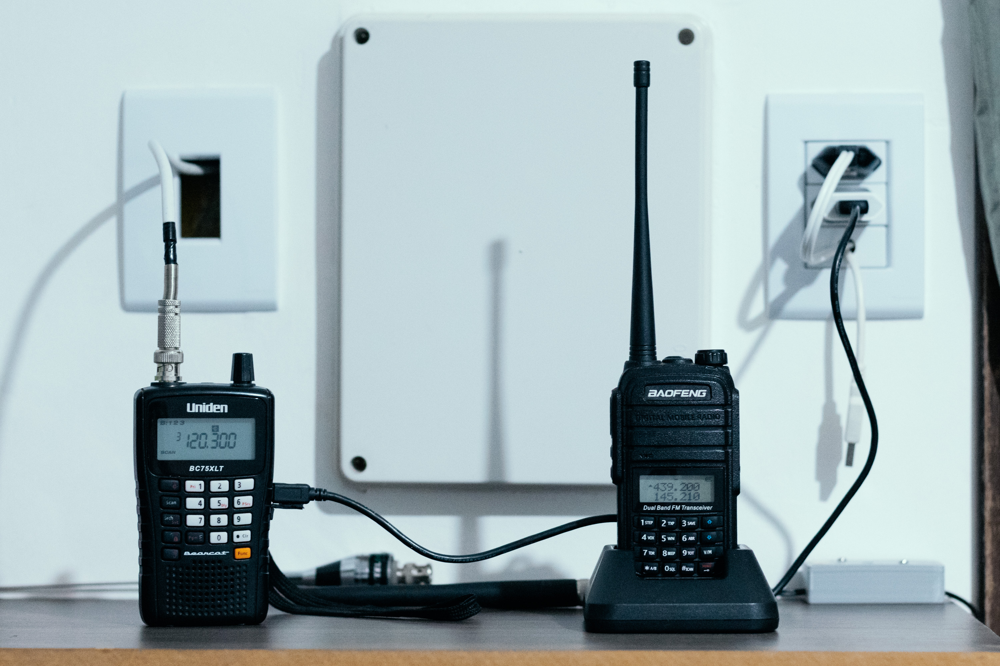

Sou entusiasta de rádio desde criança, todavia só consegui ter COER em janeiro de 2021, a partir disso obtive a licença para estação móvel e opero com indicativo PU5XRM. Sou da cidade de Foz do Iguaçu, Paraná, Brasil. Atualmente tenho de equipamento um HT da Baofeng, modelo UV-6RA que uso para os contatos VHF/UHF.
Há alguns anos já praticava a radioescuta com um Uniden BC75XLT, com esse rádio escutei muito os radioamadores, fiz recepção de SSTV da Estação Espacial Internacional (ISS) e atualmente deixo esse scanner para escuta de aviação. Também tenho um RTL-SDR conectado a um Raspberry Pi, uso esse receptor SDR para ADS-B de aeronaves e os dados são enviados para o site FlightRadar24, a foto abaixo mostra uma caixinha que montei para esse sistema, já tem mais de um ano que está operando.